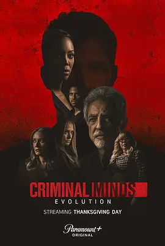

8.4
犯罪心理：演变 第十六季
Criminal Minds: Evolution Season 16
2022
美国
评分 8.4
导演:
尼尔森·麦科米克 / 乔·曼特纳 / 亚当·罗德里格兹 / 沙拉特·拉朱 / 贝瑟妮·鲁尼
演员:
乔·曼特纳 / 帕姬·布鲁斯特 / 亚当·罗德里格兹 / A·J·库克 / 克斯汀·范奈丝 / 马修·格雷·古柏勒（客串）
类型:
剧情,悬疑,犯罪
剧情简介
第十六季以“复活季”的形式回归，让 BAU 再次面对一个规模远超以往的威胁。疫情的封闭时期成为许多潜伏型连环犯罪者的温床，其中一名名为“司令”的神秘人物，更在封锁期间暗中建立了一个由多名潜在杀手组成的秘密网络。随着世界重新开放，这些人悄然恢复行动，而所有案件背后似乎都能看到 “司令” 留下的隐秘操控痕迹。普莱提斯在本季继续担任临时主管，她需要在资源被削减、行动受限的情况下维持 BAU 的战斗力。她在与各州执法部门、FBI 高层周旋时表现得坚毅果断，让团队得以继续深入调查这一“连环网络”的运作机制。罗西面对本季反派时显露出少见的疲态，他长期追捕罪犯的经历与过往创伤不断回到脑海，迫使他在心理压力下重新审视自己的判断力与存在意义。Alvez 和 Simmons 承担起大量前线行动，他们在调查现场的协作比以往更加紧密，从搜索偏僻林区到潜入嫌犯的秘密据点，每一步都充满风险。JJ 依旧负责连接现场、人质以及受害者家属，她的稳重与温柔让多个濒临崩溃的证人愿意开口讲话；加西亚原本退出实战线，却因为网络案件的复杂性被迫回归，她在庞杂数据中穿梭，追踪隐藏在暗网中的蛛丝马迹，为团队提供至关重要的突破点。本季的叙事方式跳脱过往的“单集案件”结构，而是围绕一个贯穿全季的核心威胁展开。随着调查不断深入，BAU 意识到他们面对的不是某个孤立的连环杀手，而是一个由多名罪犯构成、具有组织性和协作性的“杀手网络”。每一个案件的告破，都像是从庞大网状结构中撕下的一小块碎片，而真正的主脑仍隐藏在最深处，以冷静的方式观察着 BAU 的每一次行动。第十六季借更连贯的叙事结构与更高层级的对手，将 BAU 再次推入一场漫长、压迫的心理战争中。团队在资源紧缩、内部压力与反派操控三重夹击下，坚持靠彼此支撑前行，提醒观众他们始终是黑暗中最顽强的那束光。